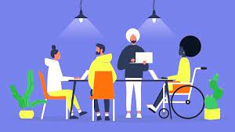
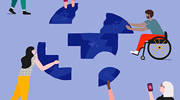
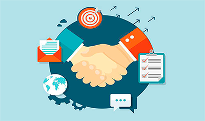

Objetivos de Desenvolvimento Sustentavel (ODS)
ODS 10
Reduzir as desigualdades dentro dos países e também entre eles.
Participação de PCDs
Parcerias
A contratação de pessoas com deficiência física promove a inclusão, além disso a pessoa com deficiência pode trazer muitos benefícios para a organização. Seu potencial de produtividade pode ser igual ou superior à média dos outros colaboradores, além de ela ter mais habilidades para tolerar frustrações. Além disso, a equipe terá muitos aprendizados sobre inclusão e cooperação.


A empresa pode realizar parcerias com outros agentes da sociedade que também estão atuando para diminuir as desigualdades em diferentes esferas.
Neste sentido, além de se unir a instituições de ensino, governos e até mesmo outras empresas, para ajudar a alavancar o ODS 10 é possível fazer parcerias com ONGs que já atuam nessa causa – caso, por exemplo, das sete que destacamos a seguir.
